Host Management
Users can view and manage SUSE Virtualization nodes from the host page. The first node always defaults to be a management node of the cluster. When there are three or more nodes, the two other nodes that first joined are automatically promoted to management nodes to form a HA cluster.
|
Because SUSE Virtualization is built on top of Kubernetes and uses etcd as its database, the maximum node fault toleration is one when there are three management nodes. |
SUSE Virtualization reserves CPU resources for system-level operations, which is why the total number of cores stated in the CPU column is slightly less than the actual number of cores on each host. For more information, see Calculation of shared CPU pool.
Node Maintenance
Admin users can enable Maintenance Mode (select ⋮ > Enable Maintenance Mode) to automatically evict all virtual machines from a node. This mode leverages batch migration to move the live-migratable virtual machines to other nodes, which is useful when you need to reboot, upgrade firmware, or replace hardware components. At least two active nodes are required to use this feature.
Non-migratable virtual machines can prevent the node from activating Maintenance Mode. When this occurs, you must identify and manually shut down those virtual machines. For more information, see Live Migration.
To force individual VMs to shut down instead of migrating to other nodes, add the label harvesterhci.io/maintain-mode-strategy and one of the following values to those VMs:
-
Migrate: Live-migrates the VM to another node in the cluster. This is the default behavior if the labelharvesterhci.io/maintain-mode-strategyis not set. -
ShutdownAndRestartAfterEnable: Restarts the VM after the node switches to maintenance mode. The VM is scheduled on a different node. -
ShutdownAndRestartAfterDisable: Shuts down the VM when maintenance mode is enabled, and restarts the VM when maintenance mode is disabled. The VM stays on the same node. -
Shutdown: Shuts down the VM when maintenance mode is enabled. The VM remains powered off instead of restarting.
You can force a collective shutdown of all VMs on a node on the Enable Maintenance Mode screen. This disables individual settings using the harvesterhci.io/maintain-mode-strategy label.
To execute a special command before shutting down a VM, consider using the container lifecycle hook PreStop.
Cordoning a Node
Cordoned nodes are marked as unschedulable. Cordoning is useful when you want to prevent new workloads from being scheduled on a node. You can uncordon a node to make it schedulable again.
Deleting a Node
|
Before removing a node from a SUSE Virtualization cluster, determine if the remaining nodes have enough computing and storage resources to take on the workload from the node to be removed. Check the following:
If the remaining nodes do not have enough resources, VMs might fail to migrate and volumes might degrade when you remove a node. |
1. Check if the node can be removed from the cluster.
You can safely remove a control plane node depending on the quantity and availability of other nodes in the cluster.
-
The cluster has three control plane nodes and one or more worker nodes.
When you remove a control plane node, a worker node will be promoted to control plane node. SUSE Virtualization allows you to assign a role to each node that joins a cluster. In earlier versions, worker nodes were randomly selected for promotion. If you prefer to promote specific nodes, see Role Management and Configuration File for more information.
Automatic node promotion occurs only when a control plane node is deleted from the cluster. This does not include situations wherein a node becomes unavailable due to failed health checks. The unhealthy node retains its role.
-
The cluster has three control plane nodes and no worker nodes.
You must add a new node to the cluster before removing a control plane node. This ensures that the cluster always has three control plane nodes and that a quorum can be formed even if one control plane node fails.
-
The cluster has only two control plane nodes and no worker nodes.
Removing a control plane node in this situation is not recommended because etcd data is not replicated in a single-node cluster. Failure of a single node can cause etcd to lose its quorum and shut the cluster down.
2. Check the status of volumes.
-
Access the embedded SUSE Storage UI.
-
Go to the Volume screen.
-
Verify that the state of all volumes is Healthy.
3. Evict replicas from the node to be removed.
-
Access the embedded SUSE Storage UI.
-
Go to the Node screen.
-
Select the node that you want to remove, click the icon in the Operation column, and then select Edit node and disks.
-
Configure the following settings:
-
Node Scheduling: Select Disable.
-
Evict Requested" Select True.
-
-
Click Save.
-
Go back to the Node screen and verify that Replicas value for the node to be removed is 0.
|
Eviction cannot be completed if the remaining nodes cannot accept replicas from the node to be removed. In this case, some volumes will remain in the Degraded state until you add more nodes to the cluster. |
4. Manage non-migratable Virtual Machines
Check if there are any non-migratable virtual machine.
|
5. Evict workloads from the node to be removed.
You can enable Maintenance Mode on the node to automatically live-migrate VMs and workloads. You can also manually live-migrate VMs to other nodes.
All workloads have been successfully evicted if the node state is Maintenance.
|
If a cluster has only two control plane nodes, SUSE Virtualization does not allow you to enable Maintenance Mode on any node. You can manually drain the node to be removed using the following command: kubectl drain <node_name> --force --ignore-daemonsets --delete-local-data --pod-selector='app!=csi-attacher,app!=csi-provisioner' Again, removing a control plane node in this situation is not recommended because etcd data is not replicated. Failure of a single node can cause etcd to lose its quorum and shut the cluster down. |
6. Delete RKE2 services and shut down the node.
-
Log in to the node using the root account.
-
Run the script
/opt/rke2/bin/rke2-uninstall.shto delete RKE2 services running on the node. -
Shut down the node.
7. Remove the node.
-
On the UI, go to the Hosts screen.
-
Locate the node that you want to remove, and then click ⋮ → Delete.
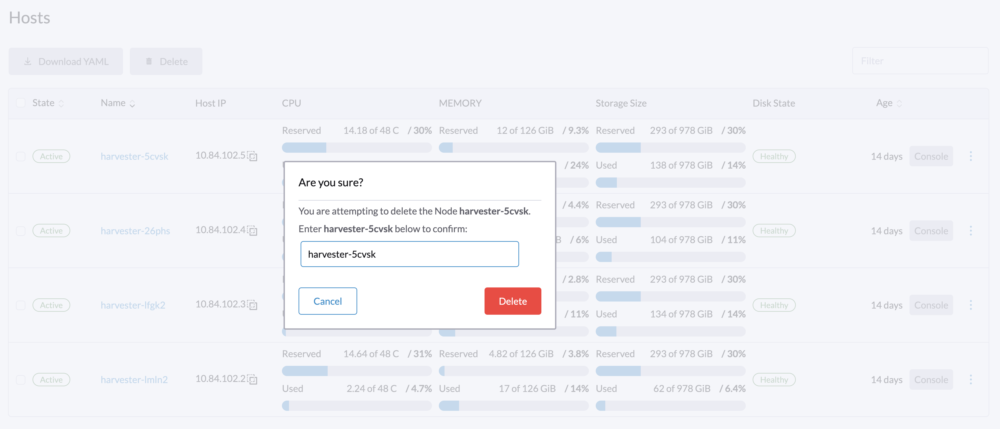
|
There’s a known issue about node hard delete. Once resolved, you can skip this step. |
Role Management
Hardware issues may force you to replace the management node. SUSE Virtualization improves the process by introducing the following roles:
-
Management: Allows a node to be prioritized when SUSE Virtualization promotes nodes to management nodes.
-
Witness: Restricts a node to being a witness node (only functions as an etcd node) in a specific cluster.
-
Worker: Restricts a node to being a worker node (never promoted to management node) in a specific cluster.
|
SUSE Virtualization currently allows only one witness node in the cluster. |
For more information about assigning roles to nodes, see ISO Installation.
Multi-disk Management
Add Additional Disks
Users can view and add multiple disks as additional data volumes from the edit host page.
-
Go to the Hosts page.
-
On the node you want to modify, click ⋮ → Edit Config.
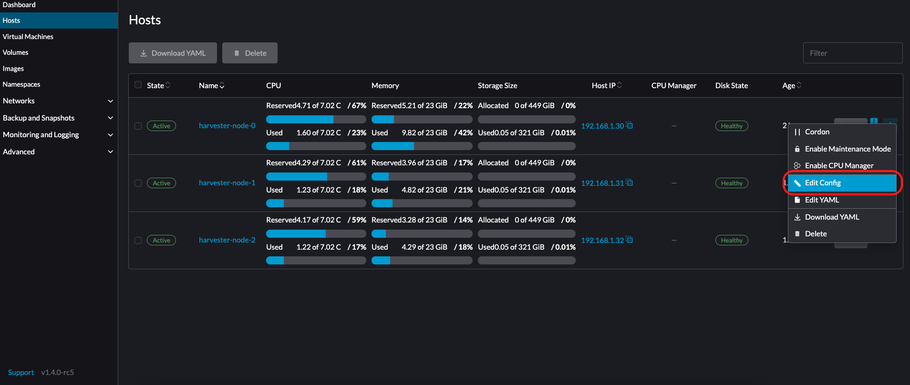 -
Select the Storage tab and click Add Disk.
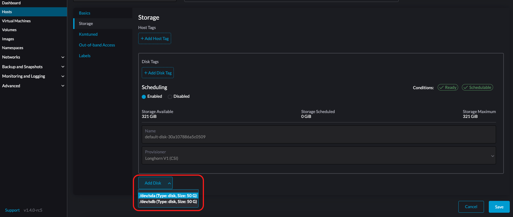SUSE Virtualization does not support adding partitions as additional disks. If you want to add it as an additional disk, be sure to delete all partitions first (e.g., using
fdisk). -
Select a provisioner for the disk.
-
LonghornV1 (CSI): This is the default provisioner.
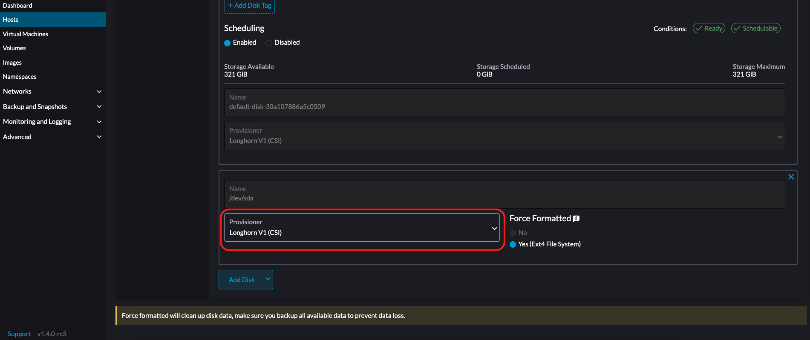You must set Force Formatted to Yes if the block device has never been force-formatted.
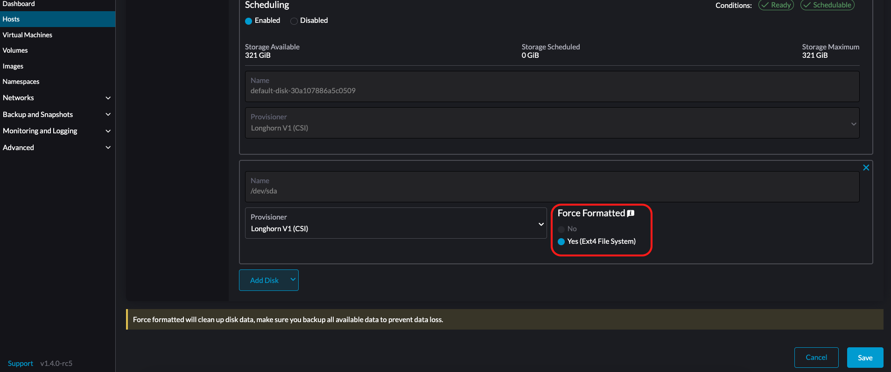 -
LVM: Select this provisioner if you want to use CSI Driver LVM (Experimental) to create persistent volumes for your workloads.
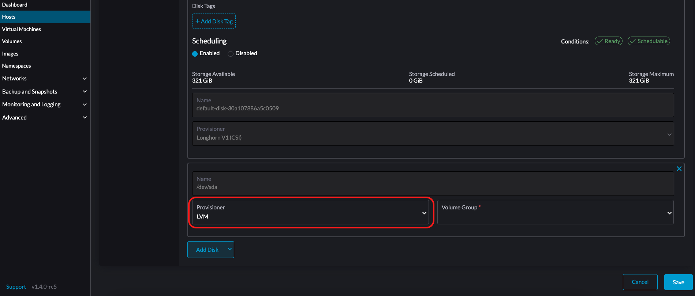
-
-
Click Save.
-
On the host details screen, verify that the disks were added and the correct provisioner was set.
You can also add storage tags if you want SUSE Storage volume data to be stored on specific nodes or disks. Storage tags can only be used with the LonghornV1 (CSI) and LonghornV2 (CSI) provisioners.
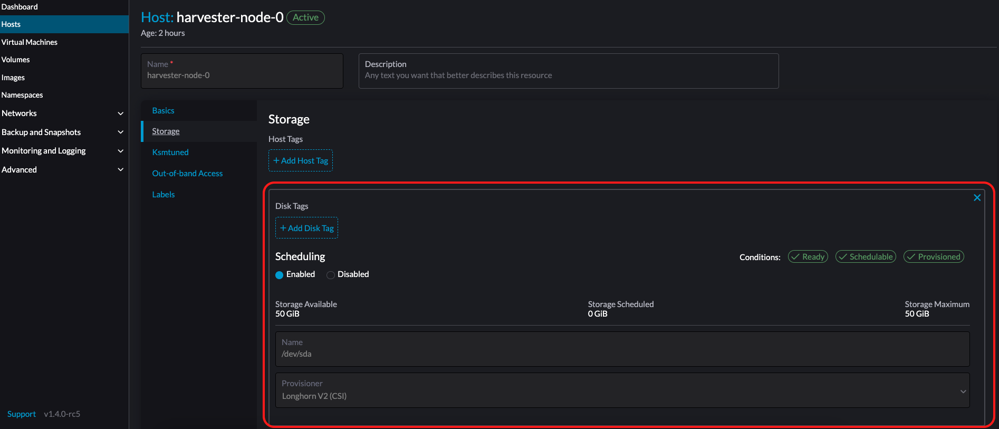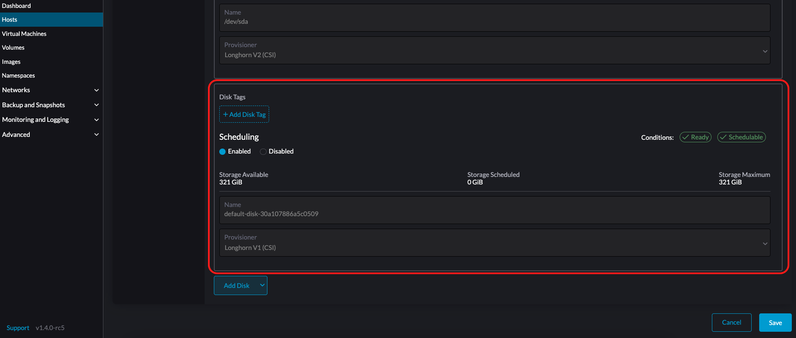
|
In order for SUSE Virtualization to identify the disks, each disk needs to have a unique WWN. Otherwise, SUSE Virtualization will refuse to add the disk.
If your disk does not have a WWN, you can format it with the |
+
|
If you are testing SUSE Virtualization in a QEMU environment, you’ll need to use QEMU v6.0 or later. Previous versions of QEMU will always generate the same WWN for NVMe disks emulation. This will cause SUSE Virtualization to not add the additional disks, as explained above. However, you can still add a virtual disk with the SCSI controller. The WWN information could be added manually along with the disk attach operation. For more details, please refer to the script. |
Storage Tags
The storage tag feature enables only certain nodes or disks to be used for storing SUSE Storage volume data. For example, performance-sensitive data can use only the high-performance disks which can be tagged as fast, ssd or nvme, or only the high-performance nodes tagged as baremetal.
This feature supports both disks and nodes.
Setup
The tags can be set up through the SUSE Virtualization UI on the host page:
-
Click
Hosts->Edit Config->Storage -
Click
Add Host/Disk Tagsto start typing and hit enter to add new tags. -
Click
Saveto update tags. -
On the StorageClasses page, create a new storage class and select those defined tags on the
Node SelectorandDisk Selectorfields.
All the existing scheduled volumes on the node or disk won’t be affected by the new tags.
|
When multiple tags are specified for a volume, the disk and the nodes (that the disk belongs to) must have all the specified tags to become usable. |
Remove disks
Before removing a disk, you must first evict SUSE Storage replicas on the disk.
|
The replica data would be rebuilt to another disk automatically to keep the high availability. |
Identify the disk to remove
-
Go to the Hosts page.
-
On the node containing the disk, select the node name and go to the Storage tab.
-
Find the disk you want to remove. Let’s assume we want to remove
/dev/sdb, and the disk’s mount point is/var/lib/harvester/extra-disks/1b805b97eb5aa724e6be30cbdb373d04.
Evict replicas (SUSE Storage dashboard)
-
Please follow this session to enable the embedded SUSE Storage dashboard.
-
Visit the SUSE Storage dashboard and go to the Node page.
-
Expand the node containing the disk. Confirm the mount point
/var/lib/harvester/extra-disks/1b805b97eb5aa724e6be30cbdb373d04is in the disks list.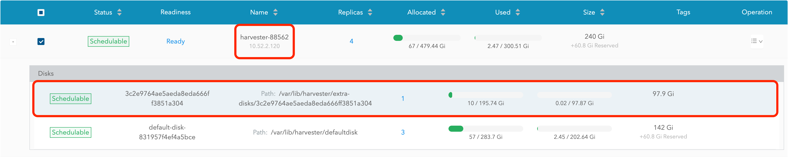 -
Select Edit node and disks.
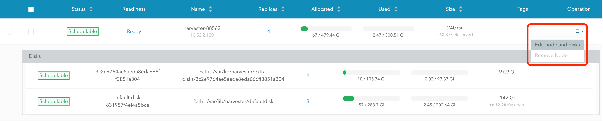 -
Scroll to the disk you want to remove.
-
Set
SchedulingtoDisable. -
Set
Eviction RequestedtoTrue. -
Select Save. Do not select the delete icon.
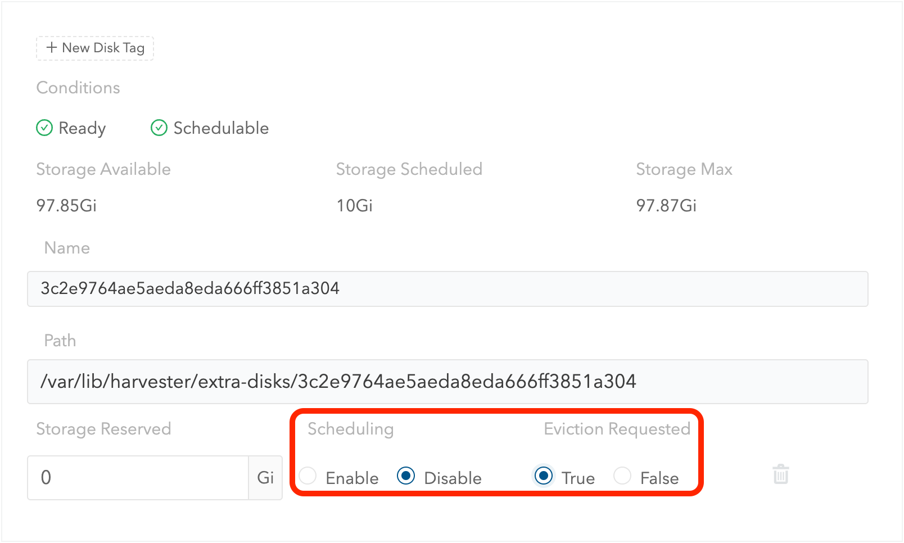
-
-
The disk will be disabled. Please wait until the disk replica count becomes
0to proceed with removing the disk.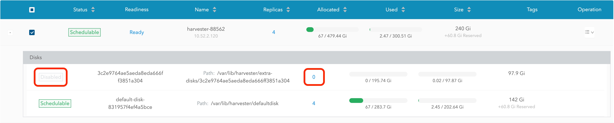
Topology Spread Constraints
Node labels are used to identify the topology domains that each node is in. You can configure labels such as topology.kubernetes.io/zone on the SUSE Virtualization UI.
-
Go to Hosts.
-
Select the target node, and then select ⋮ → Edit Config.
-
On the Labels tab, click Add Label and then specify the label
topology.kubernetes.io/zoneand a value. -
Click Save.
The label is automatically synchronized with the corresponding SUSE Storage node.
Ksmtuned Mode
Ksmtuned is a KSM automation tool deployed as a DaemonSet to run Ksmtuned on each node. It will start or stop the KSM by watching the available memory percentage ratio (i.e. Threshold Coefficient). By default, you need to manually enable Ksmtuned on each node UI. You will be able to see the KSM statistics from the node UI after 1-2 minutes.(check KSM for more details).
Quick Run
-
Go to the Hosts page.
-
On the node you want to modify, click ⋮ → Edit Config.
-
Select the Ksmtuned tab and select Run in Run Strategy.
-
(Optional) You can modify Threshold Coefficient as needed.
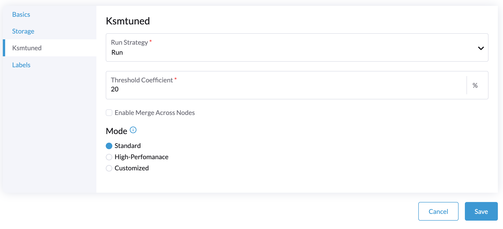 -
Click Save to update.
-
Wait for about 1-2 minutes and you can check its Statistics by clicking Your Node → Ksmtuned tab.
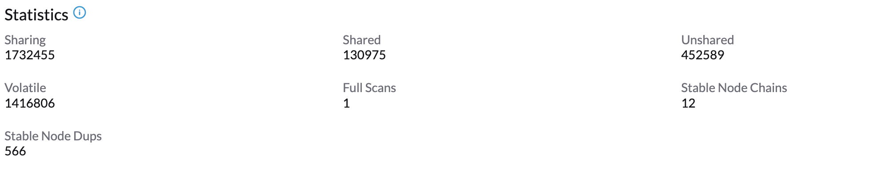
Parameters
Run Strategy:
-
Stop: Stop Ksmtuned and KSM. VMs can still use shared memory pages.
-
Run: Run Ksmtuned.
-
Prune: Stop Ksmtuned and prune KSM memory pages.
Threshold Coefficient: configures the available memory percentage ratio. If the available memory is less than the threshold, KSM will be started; otherwise, KSM will be stopped.
Merge Across Nodes: specifies if pages from different NUMA nodes can be merged.
Mode:
-
Standard: The default mode. The control node ksmd uses about 20% of a single CPU. It uses the following parameters:
Boost: 0
Decay: 0
Maximum Pages: 100
Minimum Pages: 100
Sleep Time: 20-
High-performance: Node ksmd uses 20% to 100% of a single CPU and has higher scanning and merging efficiency. It uses the following parameters:
Boost: 200
Decay: 50
Maximum Pages: 10000
Minimum Pages: 100
Sleep Time: 20-
Customized: You can customize the configuration to reach the performance that you want.
Ksmtuned uses the following parameters to control KSM efficiency:
| Parameters | Description |
|---|---|
Boost |
The number of scanned pages is incremented each time if the available memory is less than the Threshold Coefficient. |
Decay |
The number of scanned pages is decremented each time if the available memory is greater than the Threshold Coefficient. |
Maximum Pages |
Maximum number of pages per scan. |
Minimum Pages |
The minimum number of pages per scan, also the configuration for the first run. |
Sleep Time (ms) |
The interval between two scans, which is calculated with the formula (Sleep Time * 16 * 1024* 1024 / Total Memory). Minimum: 10ms. |
For example, assume you have a 512GiB memory node that uses the following parameters:
Boost: 300
Decay: 100
Maximum Pages: 5000
Minimum Pages: 1000
Sleep Time: 50When Ksmtuned starts, initialize pages_to_scan in KSM to 1000 (Minimum Pages) and set sleep_millisecs to 10 (50 * 16 * 1024 * 1024 / 536870912 KiB < 10).
KSM starts when the available memory falls below the Threshold Coefficient. If it detects that it is running, pages_to_scan increments by 300 (Boost) every minute until it reaches 5000 (Maximum Pages).
KSM will stop when the available memory is above the Threshold Coefficient. If it detects that it is stopped, pages_to_scan decrements by 100 (Decay) every minute until it reaches 1000 (Minimum Pages).
NTP Configuration
Time synchronization is an important aspect of distributed cluster architecture. Because of this, SUSE Virtualization provides a simpler way for configuring NTP settings.
SUSE Virtualization supports NTP configuration on the SUSE Virtualization UI Settings screen (Advanced > Settings). You can configure NTP settings for the entire SUSE Virtualization cluster at any time, and the settings are applied to all nodes in the cluster.
You can set up multiple NTP servers at once.
You can check the settings in the node.harvesterhci.io/ntp-service annotation in Kubernetes nodes:
-
ntpSyncStatus: Status of the connection to NTP servers (possible values:disabled,syncedandunsynced) -
currentNtpServers: List of existing NTP servers$ kubectl get nodes harvester-node-0 -o yaml |yq -e '.metadata.annotations.["node.harvesterhci.io/ntp-service"]' {"ntpSyncStatus":"synced","currentNtpServers":"0.suse.pool.ntp.org 1.suse.pool.ntp.org"}
|
Cloud-Native Node Configuration
You may need to customize one or more nodes after installing SUSE Virtualization. This process usually entails updating the runtime configuration and modifying files in the /oem directory of each node to make changes persist after rebooting.
These customizations can be described in a Kubernetes manifest and then applied to the underlying cluster using kubectl or other GitOps-centric tools such as SUSE® Rancher Prime: Continuous Delivery.
|
Misconfigurations might compromise the ability of a SUSE Virtualization node to boot up, or even damage the overall stability of the cluster. You can prevent such issues by reading the Elemental toolkit documentation to learn how to correctly customize Elemental. |
Creating a CloudInit Resource
SUSE Virtualization node customization is bounded only by your creativity and by what the Elemental toolkit markup can syntactically express. The documentation, therefore, cannot provide an exhaustive list of possible customizations and use cases.
Example: You want to add an SSH authorized key for the default rancher user on all nodes.
Start by creating a Kubernetes manifest for a CloudInit resource.
file: ssh_access.yaml
apiVersion: node.harvesterhci.io/v1beta1
kind: CloudInit
metadata:
name: ssh-access
spec:
matchSelector: {}
filename: 99_ssh.yaml
contents: |
stages:
network:
- authorized_keys:
rancher:
- ssh-ed25519 AAAA...This manifest describes an Elemental cloud-init document that will be applied to all nodes (because the empty matchSelector: {} field matches everything). The YAML document in the .spec.contents field will be rendered to /oem/99_ssh.yaml (because of the .spec.filename field.)
Apply this example using the command kubectl apply -f ssh_access.yaml.
|
Reboot the relevant SUSE Virtualization nodes so that the Elemental toolkit executor can apply the new configuration at boot. |
CloudInit Resource Spec
| Field | Required | Description |
|---|---|---|
matchSelector |
Yes |
Setting that allows you to specify the nodes that will receive the configuration changes. |
filename |
Yes |
Name of the file that appears in |
contents |
Yes |
Elemental toolkit cloud-init-style file that will be rendered to a file in |
paused |
No |
When set to |
The matchSelector field can be used to target specific nodes or groups of nodes based on their labels.
Example:
matchSelector:
kubernetes.io/hostname: "harvester-node-1"|
All label key-value pairs listed in the In the following example, |
Updating a CloudInit Resource
You can use the command kubectl edit to update a CloudInit resource. However, there is a caveat if the matchSelector field is updated to exclude one or more nodes from the customization. See the note in the Deleting a CloudInit Resource section regarding rolling back customizations.
# kubectl edit cloudinit CLOUDINIT_NAMEDeleting a CloudInit Resource
You can use the command kubectl delete to remove a CloudInit resource from the SUSE Virtualization cluster.
# kubectl delete cloudinit CLOUDINIT_NAME|
SUSE Virtualization is unable to "roll back" previously described customizations because the CloudInit resource can describe anything that can be expressed as an Elemental toolkit customization, including arbitrary shell commands. In the Creating a CloudInit Resource example, the YAML file contains the You are responsible for amending or creating a CloudInit resource that rolls the changes back (if necessary) before you reboot the node. |
Troubleshooting CloudInit Rollouts
If an Elemental toolkit cloud-init document does not appear in /oem or does not contain the expected contents, the status block of the CloudInit resource might contain useful hints.
# kubectl get cloudinit CLOUDINIT_NAME -o yamlstatus:
rollouts:
harvester-dngmf:
conditions:
- lastTransitionTime: "2024-02-28T22:31:23Z"
message: ""
reason: CloudInitApplicable
status: "True"
type: Applicable
- lastTransitionTime: "2024-02-28T22:31:23Z"
message: Local file checksum is the same as the CloudInit checksum
reason: CloudInitChecksumMatch
status: "False"
type: OutOfSync
- lastTransitionTime: "2024-02-28T22:31:23Z"
message: 99_ssh.yaml is present under /oem
reason: CloudInitPresentOnDisk
status: "True"
type: PresentThe harvester-node-manager pod(s) in the harvester-system namespace may also contain some hints as to why it is not rendering a file to a node.
This pod is part of a daemonset, so it may be worth checking the pod that is running on the node of interest.
Remote Console
You can configure the URL of the console for remote server management. This console is particularly useful in environments where physical access is limited.
-
On the SUSE Virtualization UI, go to Hosts.
-
Locate the target host, and then select ⋮ → Edit Config.
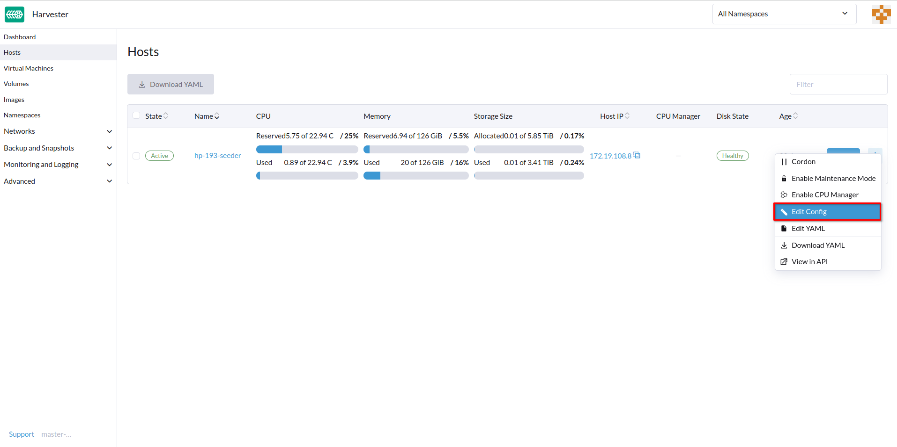 -
Specify the Console URL, and then click Save.
Example (with HPE iLO):
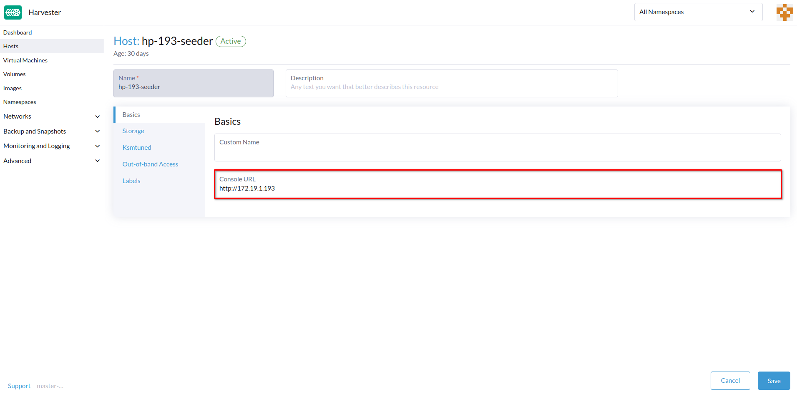 -
Click Console to access the remote server.
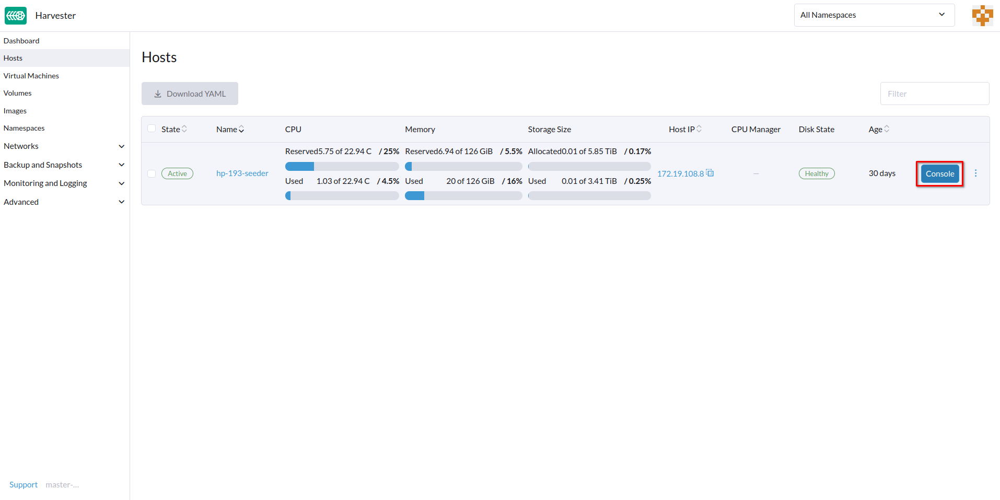
Rotating expired certificates
If the RKE2 certificates have expired, you cannot use the auto-rotate-rke2-certificates setting to rotate them. The setting only works when the cluster (cluster.provisioning) is marked Ready.
> kubectl get cluster.provisioning -n fleet-local local -o yaml | yq -e '.status.conditions[] | select(.type=="Ready")'
lastUpdateTime: "2025-10-22T06:41:33Z"
status: "True"
type: ReadyIf the status field’s value is False, you must manually rotate the certificates by following these steps on each node:
-
Log in to the node using the root account.
-
Stop the RKE2 service.
-
Management nodes
systemctl stop rke2-server -
Worker nodes
systemctl stop rke2-agent
-
-
Rotate the RKE2 certificates.
/opt/rke2/bin/rke2 certificate rotate -
Start the RKE2 service.
-
Management nodes
systemctl start rke2-server -
Worker nodes
systemctl start rke2-agent
-
-
Restart the
rancher-system-agentservice.systemctl restart rancher-system-agent